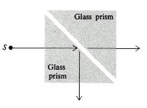

IYPT 2005 Problems
Problems for the 18th IYPT 2005
1. Dragonfly
Propose a model of how a dragonfly flies. Investigate the major parameters and validate your model.
2. The two ball problem
Two balls placed in contact on a tilted groove sometimes do not roll down. Explain the phenomenon and find the conditions, under which it occurs.
3. Avalanche
Under what conditions may an avalanche occur? Investigate the phenomenon experimentally.
4. Hydraulic jump
When a smooth column of water hits a horizontal plane, it flows out radially. At some radius, its height suddenly rises. Investigate the nature of the phenomenon. What happens if a liquid more viscous than water is used?
5. Mirage
Create a mirage like a road or desert mirage in a laboratory and study its parameters.
6. Noise
When a droplet of water or other liquid falls on a hot surface, it produces a sound. On what parameters does the sound depend?
7. The bouncing plug
A bathtub or sink is filled with water. Remove the plug and place a plastic ball over the plughole. As the water drains the ball starts to oscillate. Investigate the phenomenon.
8. Windcar
Construct a car which is propelled solely by wind energy. The car should be able to drive straight into the wind. Determine the efficiency of your car.
9. Sound in the glass
Fill a glass with water. Put a tea-spoon of salt into the water and stir it. Explain the change of the sound produced by the clicking of the glass with the tea-spoon during the dissolving process.
10. Flow rate
Combine powdered iron (iron filings) with a vegetable oil. Connect two containers with plastic tubing and allow the mixture to drain through the tube. Develop an external mechanism to control the flow rate of the mixture.
11. Water droplets
If a stream of water droplets is directed at a small angle to the surface of water in a container, droplets may bounce off the surface and roll across it before merging with the body of water. In some cases the droplets rest on the surface for a significant length of time. They can even sink before merging. Investigate these phenomena.
12. Ball spin
Spin can be used to alter the flight path of balls in sport. Investigate the motion of a spinning ball, for example a table-tennis or tennis ball, in order to determine the effect of the relevant parameters.
13. Hard Starch
A mixture of starch (e.g. cornflour or cornstarch) and a little water has some interesting properties. Investigate how its “viscosity” changes when stirred and account for this effect. Do any other common substances demonstrate this effect?
14. Einstein – de Haas Experiment
When you apply a vertical magnetic field to a metallic cylinder suspended by a string it begins to rotate. Study this phenomenon.
15. Optical tunneling
Take two glass prisms separated by a small gap. Investigate under what conditions light incident at angles greater than the critical angle is not totally internally reflected.

16. Obstacle in a funnel
Granular material is flowing out of a vessel through a funnel. Investigate if it is possible to increase the outflow by putting an “obstacle” above the outlet pipe?
17. Ocean “Solaris”
A transparent vessel is half-filled with saturated salt water solution and then fresh water is added with caution. A distinct boundary between these liquids is formed. Investigate its behaviour if the lower liquid is heated.